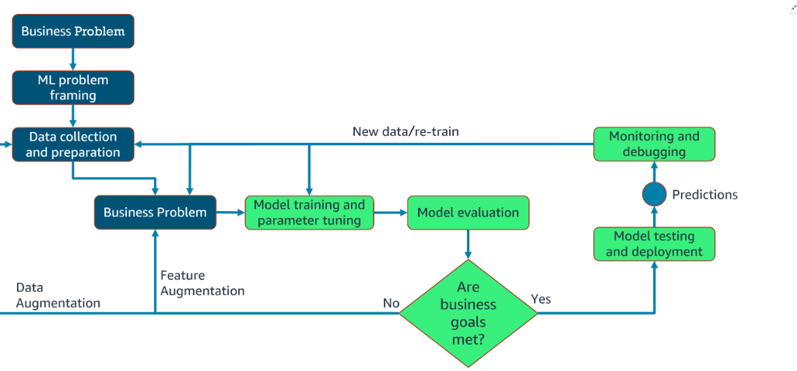

Machine Learning Development Lifecycle (MLDL)
AWS AI Practitioner Exam (AIF-C01) Study Guide
The Machine Learning (ML) lifecycle refers to the end-to-end process of developing, deploying, and maintaining machine learning models. It is rarely a linear path; instead, it is an iterative cycle of continuous improvement.

1. The ML Lifecycle Phases
The end-to-end machine learning lifecycle process includes the following key phases:
- Business Goal Identification: Defining what the business is trying to achieve.
- ML Problem Framing: Converting the business goal into a specific ML task (e.g., classification, regression).
- Data Processing:
- Data Collection: Gathering relevant raw data.
- Data Preprocessing: Cleaning and formatting data.
- Feature Engineering: Selecting and transforming variables to improve model performance.
- Model Development:
- Training: Feeding data into the algorithm.
- Tuning: Adjusting parameters for better accuracy.
- Evaluation: Testing against unseen data.
- Model Deployment: Implementing the model for Inference (making predictions).
- Model Monitoring: Watching for performance drops or "drift" in production.
- Model Retraining: Updating the model with new data to maintain accuracy.
2. Real-World Use Case: Amazon Call Center
Several years ago, Amazon needed to improve how it routed customer service calls. This Case Study illustrates how the ML lifecycle works in practice.
Phase 1: Business Goals & Problem Formulation
- The Original Problem: Customers were greeted by complex menus ("Press 1 for Returns..."). This led to transfers between agents, wasting time and money.
- The Business Goal: Route customers directly to the agent with the right skills to reduce transfers.
- The ML Problem: Predicting which "agent skill" is needed based on customer data. This was framed as a Multiclass Classification problem.
Phase 2: Data Collection & Preprocessing
- Supervised Learning: Amazon used historical data (previous calls) where the correct "agent skill" (label) was already known.
- Feature Identification: "What was the recent order?", "Does the customer own a Kindle?", "Are they a Prime member?". These became the model's Features.
- Data Cleaning: Amazon combined similar labels (e.g., multiple "Kindle" skills into one overarching Kindle skill) to simplify the model.
- Data Visualization: Analysis showed that 40% of calls were returns, 30% Prime, and 30% Kindle, helping the team understand data distribution.
Phase 3: Model Training (The "Data Split")
To ensure the model generalizes (works on new data) and doesn't just "memorize" (overfit), the data is split into three subsets:
| Subset | Purpose | Common Ratio |
|---|---|---|
| Training | Used to teach the model patterns. | 70% or 80% |
| Validation | Used to tune hyperparameters during development. | 15% or 10% |
| Testing | Used to evaluate final performance on "unseen" data. | 15% or 10% |
Phase 4: Model Tuning & Feature Engineering
After the initial training, the process is iterative: * Hyperparameter Optimization: Tweaking "knobs" that control learning speed. * Too Fast: Algorithm never reaches the optimum value. * Too Slow: Algorithm takes too long and may never converge. * Iterative Refinement: Developers revisit features and training parameters based on evaluation results.
Phase 5: Model Deployment & Monitoring
Once deployed, the model provides real-time routing. * Measuring Success: Amazon monitored the number of transfers post-deployment. The data showed a significant decrease, confirming the ML solution addressed the original business goal.
MLOps and Collaboration
Following these steps requires seamless collaboration between Product Managers (goals), Data Scientists (framing/training), and Engineers (deployment/monitoring). This culture of collaboration is known as MLOps.
Last Updated: Jan 2026